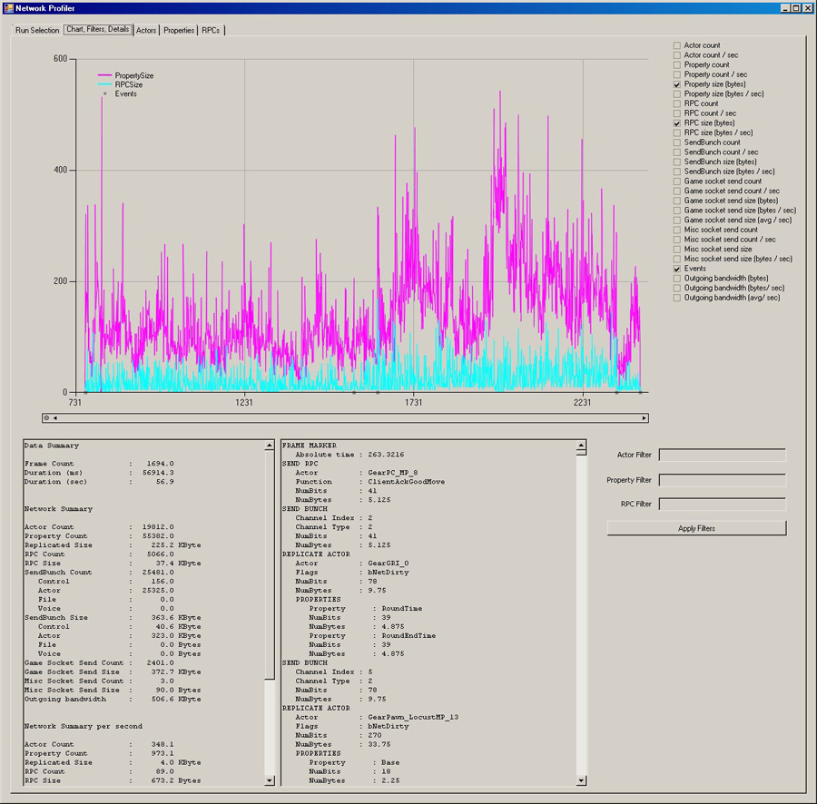
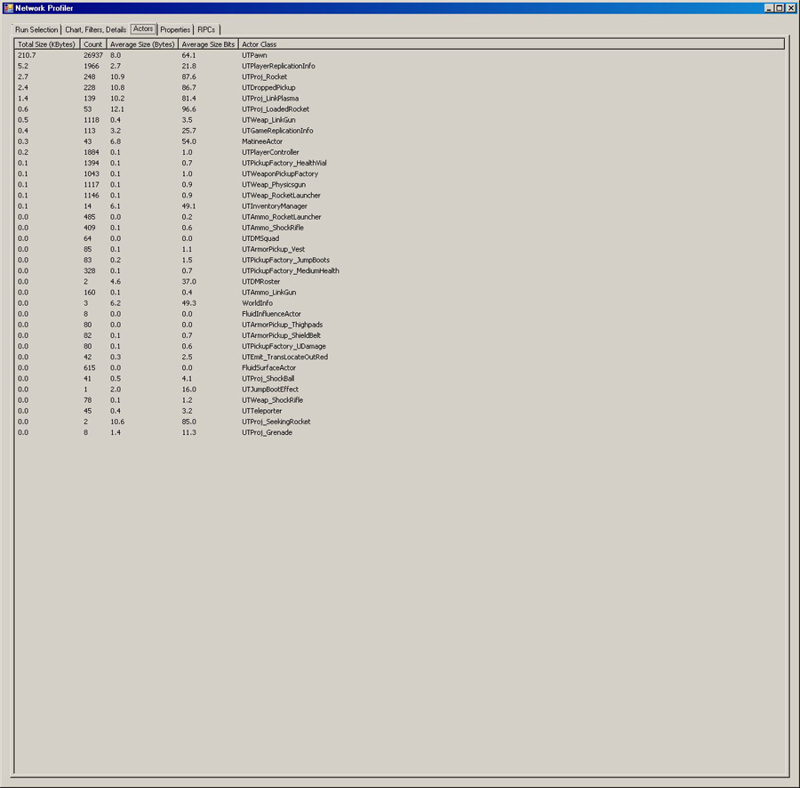
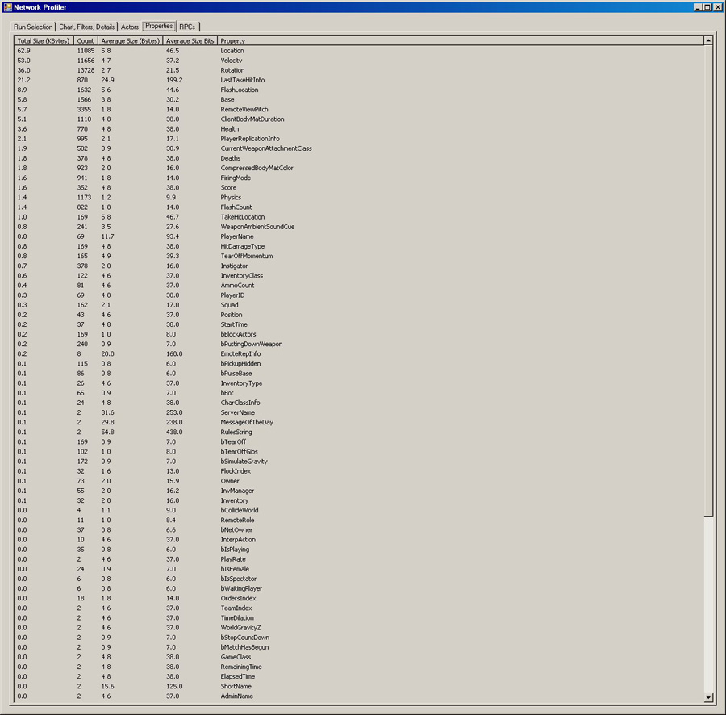
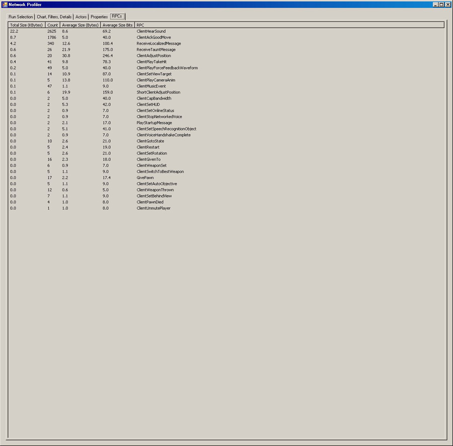

UDN
Search public documentation:
NetworkProfiler
日本語訳
中国翻译
한국어
Interested in the Unreal Engine?
Visit the Unreal Technology site.
Looking for jobs and company info?
Check out the Epic games site.
Questions about support via UDN?
Contact the UDN Staff
中国翻译
한국어
Interested in the Unreal Engine?
Visit the Unreal Technology site.
Looking for jobs and company info?
Check out the Epic games site.
Questions about support via UDN?
Contact the UDN Staff
UE3 Home > Networking & Replication > Network Profiler
Network Profiler
Overview
The standalone network profiler is a C# application that works in conjunction with the engine's ability to emit a token stream for various network events. The main focus is on outgoing network bandwidth from the server and it therefore only captures send -like events.
Requirements
The following software components are required for the Network Profiler:
Setup Unreal Engine to emit tokens
To use the network profiler, simply pass
-networkprofiler=TAG on the game command line, which wil then start the token emission when there is network data and either upon exit or map change will write a *.nprof file to the Profiling folder (i.e C:\UDK\UDK-2012-01\UDKGame\Profiling)
This created and potentially uploaded file can then in turn be opened by the NetworkProfiler.exe in the Binaries folder and further investigated.
Network Profiler UI
Run Selection tab
This tab lets you either open a *.nprof file directly, or if set up, allows you to pick various runs from the associated database.Chart, Filter, Details tab
This tab is used for visual representation of the data stream. The charting area takes up the top portion with the check box list of potential graphs to chart to its right. The chart allows zooming via drag selection, which defaults to the X axis by default. Pressing the right mouse button in the chart area will toggle the currently active axis. You can undo zoom operations by clicking the little circle with the dot on the scrollbar. The data summary window will either show a summary of the last drag selection, or if single clicked, the currently selected frame. The textbox to its right lists all captured network operations during that frame. The actor, property and RPC filters will filter the displayed information based on the content of the checkbox at the time "Apply Filters" is clicked. Simply clear the filter and hit "Apply Filters" to undo any filtering. Worth noting that the outgoing bandwidth graph/ summary is taking packet overhead into account. This is a platform specific value that can be modified by setting NetworkStream.PacketOverhead. Actors tab
The actors tab shows all actors types that have been replicated and summary of replication counts and sizes. Properties tab
The properties tab shows all properties that have been replicated and summary of replication counts and sizes. RPCs tab
The RPCs tab shows all RPCs that have been replicated and summary of replication counts and sizes. Captured data
Currently captured by the profiler are low level FSocket::Send* events, UChannel::SendBunch, UActor::ReplicateActor actor/ property replication, RPC sends, client join/ leave events, and with frame markers.

{kind=link}
{kind=link}
{kind=link}
{kind=link}